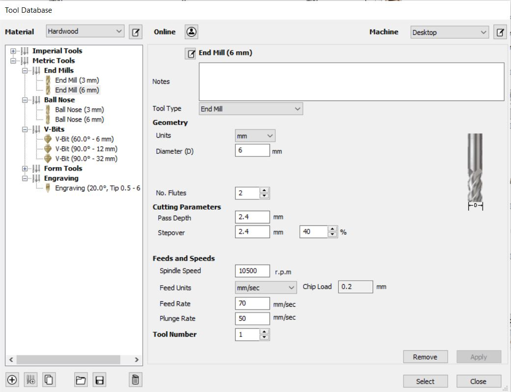
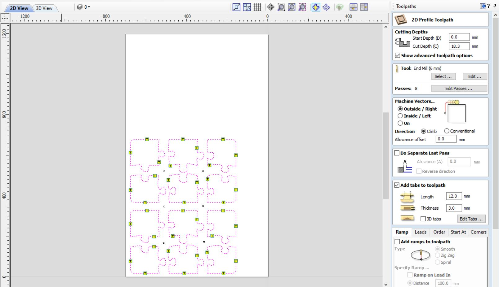

Verkefni 5 - Að fræsa og undirbúa mót
Skipting verkefnis
Í þessu verkefni á að hanna, teikna, og undirbúa mót fyrir fræsingu, en vegna COVID-19 þá var ekki hægt að framleiða þetta verkefni. Það sem að hópurinn ákvað til að framleiða var klakaform. Þessi hópur samanastendur af mér sjálfum ásamt Birtu Hákonardóttur og Elísu Ósk Jónsdóttur
Skipting verkefnis
Í þessu verkefni fékk Birta það hlutverk að hanna og teikna klakaformið, ég fékk það hlutverk að teikna mótið sem að myndi og svo hafði Elísa umsjón yfir því að útbúa skurðarferla sem og að hrema og taka þá upp í Fusion, í stað þess að framleiða mótið í raun
Mótagerð
Birta sá um hönnun og teikningu verkefnisins en hennar hluta má nálgast með því að ýta á hnappinn hér fyrir neðan
Eftir að Birta var búin að teikna hlutinn þá gat ég byrjað að teikna mótið en til þess notaðist ég við Fusion en það má nálgast í hnappnum hér að neðan
Ég byrjaði á því að niðurhala Fusion skránni frá Birtu sem að innihélt klakaformið en skráin leit svona út þegar að ég náði í hana:

Til þess að byrja að gera mótið, þá gerði ég ferhyrning utan um klakaformið og extrudaði hann aðeins stærri en klakaformið sjálft. Síðan notaði ég combine skipunina í Fusion og cut og þá dró ég klakaformið frá kassanum og þá leit hluturinn svona út:

Þá opnaði ég toolpath flipann í VCarve og ég byrjaði á því að velja bitann sem að ég vildi nota en það var Metric End Mill 6mm biti sem var til uppí FabLab. Fleiri stillingar eins og spindilharði má sjá á mynd hér að neðan
Síðan valdi ég litlu hringina og valdi drilling toolpath í toolpath flipanum. Síðan stillti ég dýptina á skuðinum í aðeins 1mm þar sem að götin voru einungis leiðavísar fyrir skrúfur svo ýtti ég á calculate og þá var hægt að sjá hvert fræsirinn myndi fara.
Síðan var komið að því að gera toolpath fyrir púslin en þá valdi ég alla púsl vectorana og valdi profile toolpath ég valdi þykktina 18,3 mm því að við viljum fara í gegnum efnið okkar, sami biti og bitastillingar voru valdar og fyrir litlu hringina. Síðan voru settir tabar á hvert og eitt púsl, 3 á hvert. En þeir voru 3mm þykkir og það var ekki fræst þar sem að tabarnir voru settir til þess að púslin myndu haldast föst við plötuna. En þegar yrði búið að fræsa þá þurfti að brjóta þá frá til þess að losa púslin og síðan var ýtt á calculate. Mynd af stillingum sem og lokaútkomu í VCarve má sjá hér
Síðan var komið að því að framleiðsluhluta verkefnisins en hann má finna á vefsíðu Elísu í hnappnum hérna að neðan
Tímaskráning
Tímaskráning fyrir þetta verkefni má sjá í töflunni hér að neðan
Tímaskráning fyrir verkefni 2
| Velja verkefni | 1 klst |
| Vinna í VCarve | 4 klst |
| Horfa á öryggismyndbönd | 1 klst |
| Framleiðsla | 2 klst |
| Vefsíðugerð | 3 klst |
| 11 klst |
Skrár
VCarve skrá fyrir þetta verkefni má nálgast hér